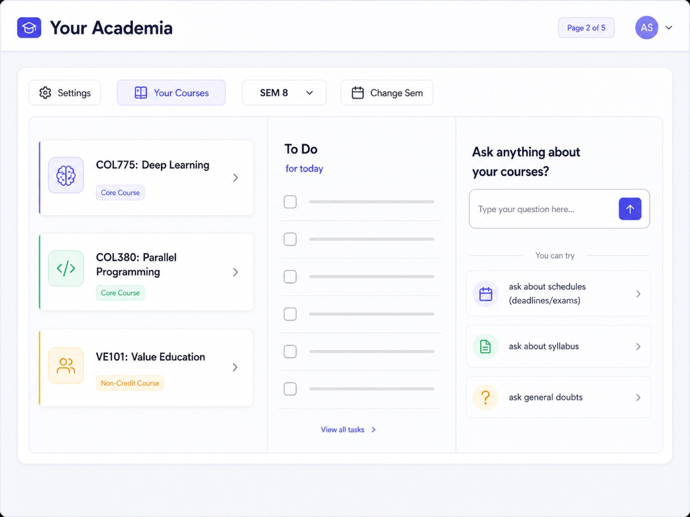
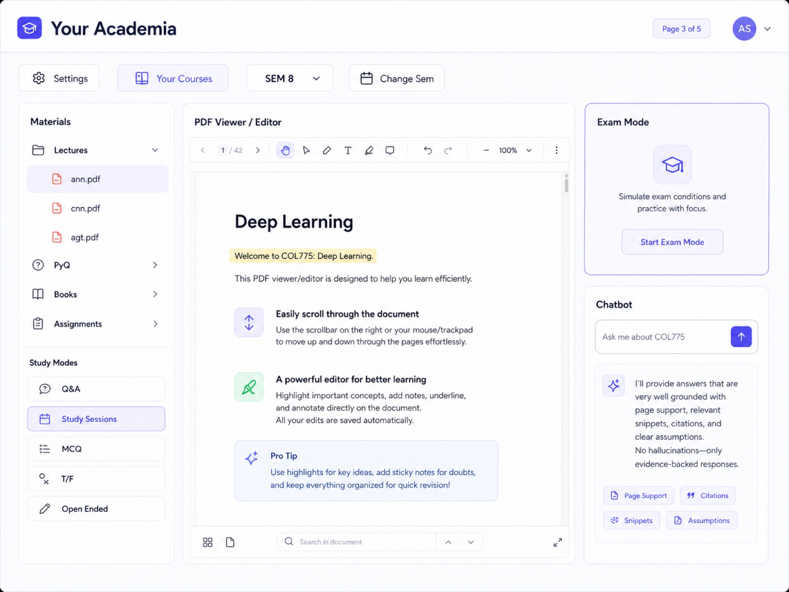
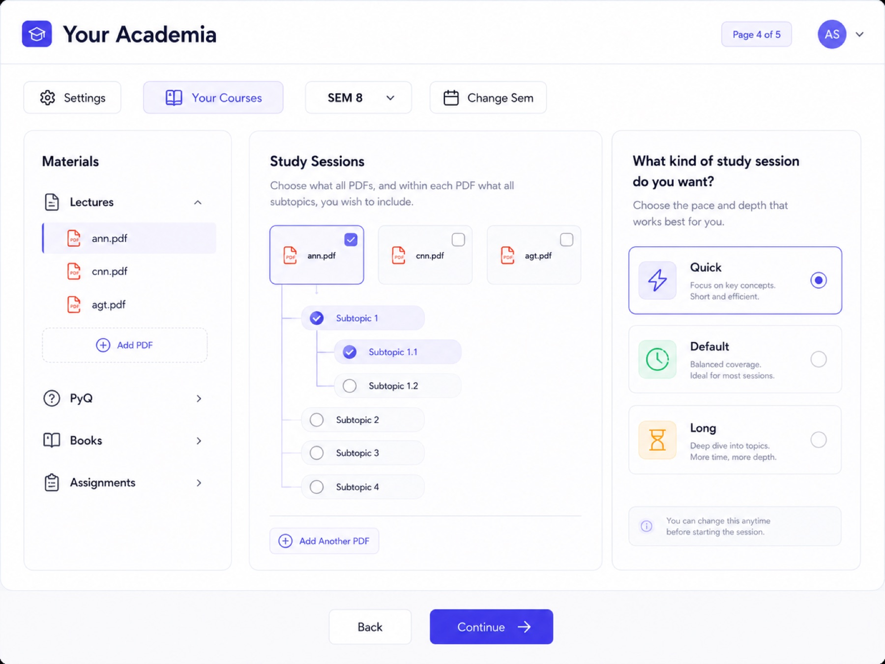
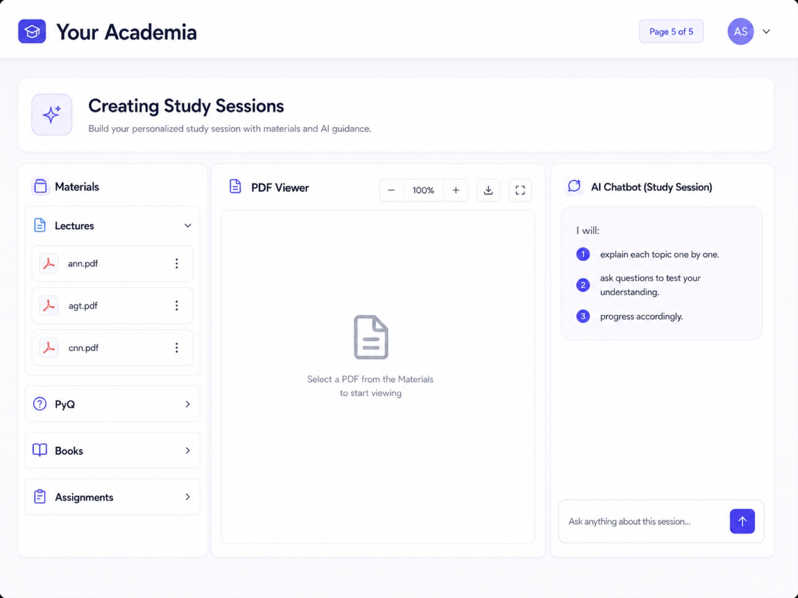

Course home
Courses, semester switching, tasks, and quick prompts live in one quiet dashboard designed for daily academic work.
Academic AI OS
A course-first AI workspace where students read PDFs, ask questions, verify sources, and turn materials into focused study sessions.
The Workspace
Courses, semester switching, tasks, and quick prompts live in one quiet dashboard designed for daily academic work.
Lectures, books, PYQs, and assignments sit beside a PDF viewer, editor tools, and a course-aware assistant.
Q&A, study sessions, MCQ, true/false, open-ended practice, and exam mode support different study moments.
Student Command Center
CoursePilot keeps the product dense but calm: students can jump from COL775 to schedules, syllabus questions, or course-specific study work without losing context.

Evidence-Backed AI
The assistant is designed around page support, citations, relevant snippets, and clear assumptions, so learning stays connected to the uploaded course material.

Open the lecture PDF and ask inside the course context.
Receive an answer grounded in relevant pages and snippets.
Jump back to source material before trusting the response.
Study Sessions


Next Build
Tablet handwriting and annotation support for lecture-first workflows.
Flexible references between lectures, books, assignments, and PYQs.
Cleaner authentication and student metadata for personalized courses.
For Founders, Faculty, and Student Teams